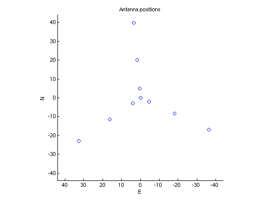
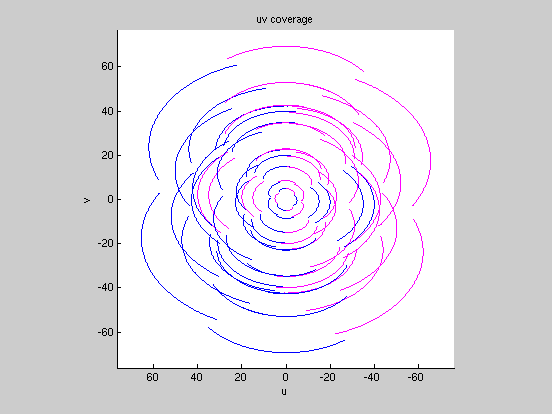
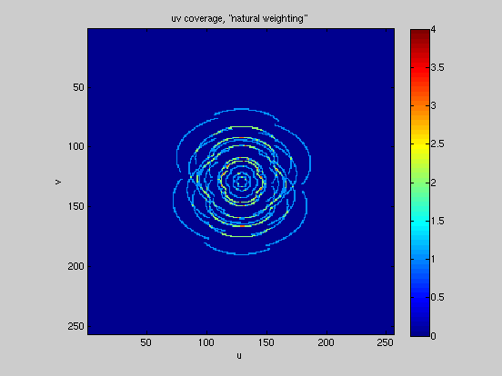
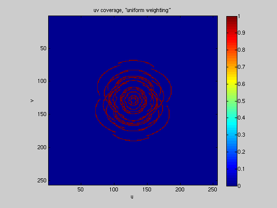
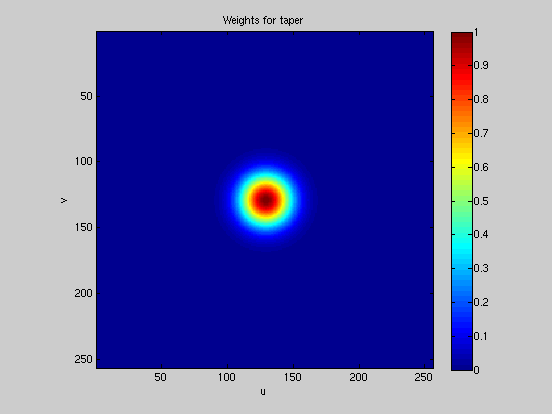
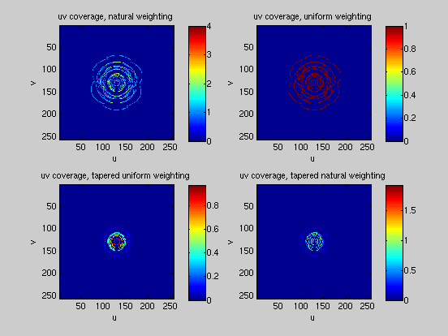
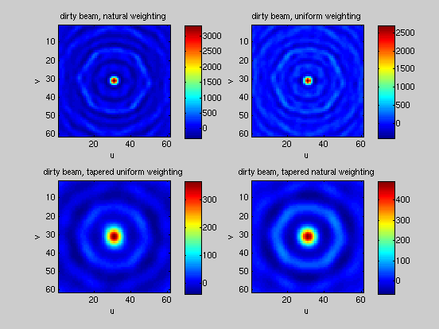

uv tracks and dirty beams
This script computes uv tracks for a collection of antennas (with positions listed in a file given by the variable 'antfile'), given the source declination, hour angle range for the track, and the observatory latitude.
Some antenna position files are: antPosY.txt, antPosNSline.txt, antPosEWline.txt, antPosEWregLine.txt, antPosCross.txt, or make up your own!
This script is uvAndBeams.m. It uses functions uvTrack.m to compute uv tracks, which in turn needs functions d2r.m to convert degrees to radians xyz2uvw.m and baseline2xyz.m for the geometry. Other component functions are uvMask.m to make the mask matrix and gaussTaper.m to generate uv-plane taper values.
AH 2010.3.16
Contents
Input parameters
% number of points along track nstep = 300; % hour angle range of +/- 3 hours h = linspace(-3, 3, nstep)*pi/12; % source, obs postions (converting degrees to radians with d2r) dec = d2r(40); % Cas A is 56.4 lat = d2r(38. + 59./60. + 48./3600.); % College Park antfile = 'antPosY.txt'; % file with antenna positions % define mask matrix len = 2^8; % should be a power of two M = zeros(len, len);
Geometry
% get antenna position file % assumes no elevation changes (2D input data) % displacements are E, N in units of wavelengths P = load(antfile); % plot mx = max(abs(P(:))); figure(1) clf() set(axes,'XDir','reverse') hold on plot(P(:,1), P(:,2), 'o') axis([-mx, mx, -mx, mx]*1.1) axis square xlabel('E') ylabel('N') title('Antenna positions') hold off % how many pairs? n = size(P, 1); pr = (n*(n-1))/2; % matrix to store baseline lengths and azimuth angles B = zeros(pr, 2); % cycle through pairs, calculate distances and angles between antennas k = 0; for i = 1:n for j = (i+1):n k = k+1; B(k, 1) = sqrt((P(i,1)-P(j,1))^2 + (P(i, 2)-P(j, 2))^2); B(k, 2) = atan2((P(i, 2)-P(j, 2)), (P(i,1)-P(j,1))); end end
uv tracks
% also to find scaling for mask figure(2) clf() set(axes,'XDir','reverse') hold on mx = 0.; for i = 1:pr X = uvTrack(h, B(i, 1), B(i, 2), 0., lat, dec, 300); plot(X(:,1), X(:,2)) plot(-X(:,1), -X(:,2), 'm') mx = max(mx, max(abs(X(:)))); end xlabel('u') ylabel('v') title('uv coverage') axis([-mx, mx, -mx, mx]*1.1) axis square hold off
Mask matrix; natural weighting
% scale factor to fit tracks into matrix sc = len/2/mx * 0.95 * 0.5; % sum tracks into mask matrix for i = 1:pr M = M + uvMask(h, B(i, 1), B(i, 2), 0., lat, dec, 300, len, sc); end % transpose matrix for plots (x, y -> row, column) M = M'; % plot figure(3) clf() imagesc(M) colorbar() axis image xlabel('u') ylabel('v') title('uv coverage, "natural weighting"')
"Flatten" mask matrix; uniform weighting
% set all values > 1 to 1 FM = M; % copy array to keep original FM(FM > 1.) = 1.; % plot figure(4) clf() imagesc(FM) colorbar() axis image xlabel('u') ylabel('v') title('uv coverage, "uniform weighting"')
Taper in uv space
% matrix with taper weights; heavy taper to emphasize effect T = gaussTaper(M, len/8); % show matrix figure(5) clf() imagesc(T) colorbar() axis image xlabel('u') ylabel('v') title('Weights for taper')
Summary plots of unweighted and weighted coverage
figure(6) subplot(2,2,1) imagesc(M) colorbar() axis image xlabel('u') ylabel('v') title('uv coverage, natural weighting') subplot(2,2,2) imagesc(FM) colorbar() axis image xlabel('u') ylabel('v') title('uv coverage, uniform weighting') subplot(2,2,4) imagesc(T.*M) colorbar() axis image xlabel('u') ylabel('v') title('uv coverage, tapered natural weighting') subplot(2,2,3) imagesc(T.*FM) colorbar() axis image xlabel('u') ylabel('v') title('uv coverage, tapered uniform weighting')
Zoom in for summary plot of dirty beams
figure(7) % pick out center of the array to see beam detail nn = 30; % size of central region, in array index nos. ctr = len/2 + 1; idx = ctr-nn:ctr+nn; % X is Fourier transform of the uv coverage % since the coverage is symmetrical, X is pure real (apart from % numerical roundoff) subplot(2,2,1) X = real(fftshift(fft2(fftshift(M)))); imagesc(X(idx, idx)) colorbar() axis image xlabel('u') ylabel('v') title('dirty beam, natural weighting') subplot(2,2,2) X = real(fftshift(fft2(fftshift(FM)))); imagesc(X(idx, idx)) colorbar() axis image xlabel('u') ylabel('v') title('dirty beam, uniform weighting') subplot(2,2,4) X = real(fftshift(fft2(fftshift(T.*M)))); imagesc(X(idx, idx)) colorbar() axis image xlabel('u') ylabel('v') title('dirty beam, tapered natural weighting') subplot(2,2,3) X = real(fftshift(fft2(fftshift(T.*FM)))); imagesc(X(idx, idx)) colorbar() axis image xlabel('u') ylabel('v') title('dirty beam, tapered uniform weighting')